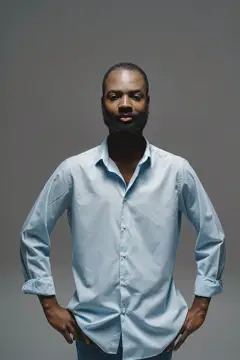
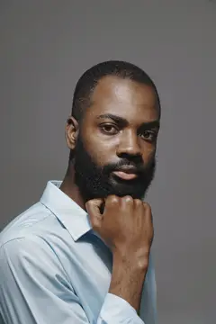
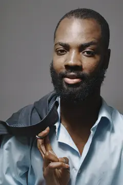
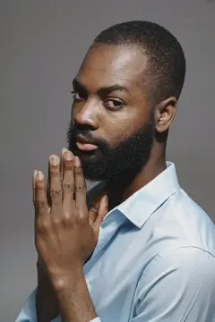
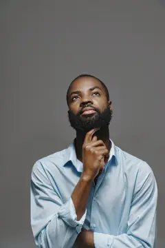
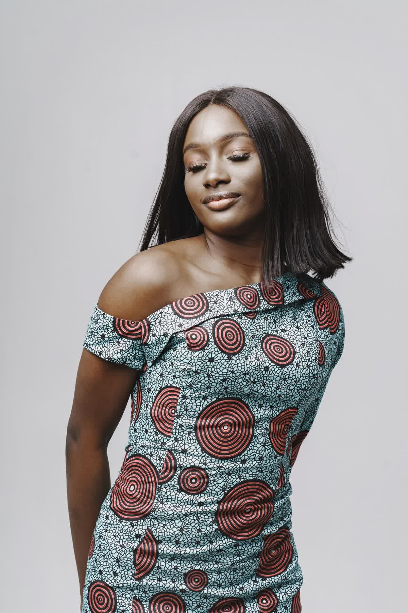

Through the Lens — The Sitting
Sitting note
Gaze 01 · Meets
02/05
- Sitter
- Sitting A
- Gaze
- Meets
- Kept
- Take 02 of 05
- Asked
- Hold the look. Do not smile.
Gustavo Fring / Pexels · Pexels License





Sitting note
Gaze 02 · Past
05/05
- Sitter
- Sitting A
- Gaze
- Past
- Kept
- Take 05 of 05
- Asked
- Look up, past the light.
Same sitting. Eyes leave the lens.
Sitting note
Gaze 03 · Refuses
01/01
- Sitter
- Sitting B
- Gaze
- Refuses
- Kept
- Kept
- Asked
- Close the eyes. Do not perform.
Same light. Second sitter.

Book a sitting
Bring a face. We keep the takes that hold.
Imagery: Gustavo Fring on Pexels (EXIF Artist taras_chaban), Pexels License. Lens and aperture marked example where EXIF provides none.
Sample page by Solved Tech: websites, apps and automation for small businesses. Fictional studio for demonstration.